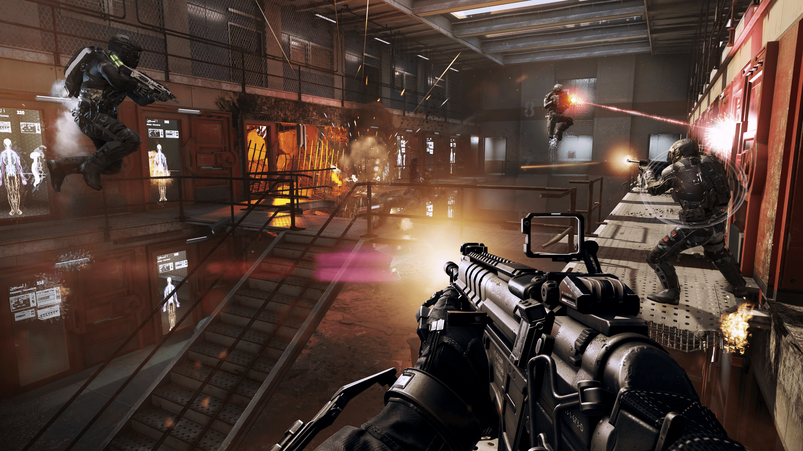
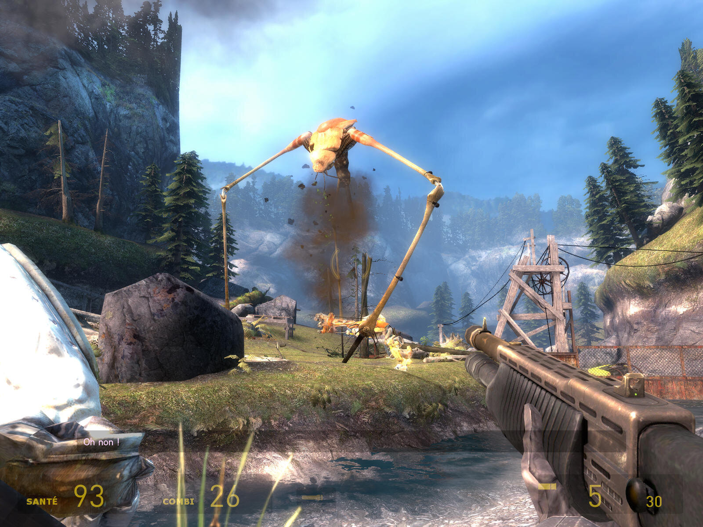
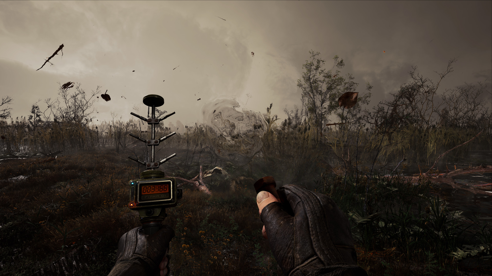

FPS (First Person Shooter)
Définition
Le jeu de tir à la première personne (en anglais FPS pour First-person shooter) ou en vue subjective,
aussi appelé Doom-like est un genre de jeu vidéo de tir fondé sur des combats en vision subjective (« à la première personne »),
c'est-à-dire que le joueur voit l'action à travers les yeux du protagoniste.
Examples de jeux dans cette catégorie :
- Call Of Duty 
- Halo
- Half-Life 
- Stalker 